Use cases
A. Given a region of interest (gene), get similar varieties
Region of interest: LOC_Os04g57530
-
Go to Genotype search page 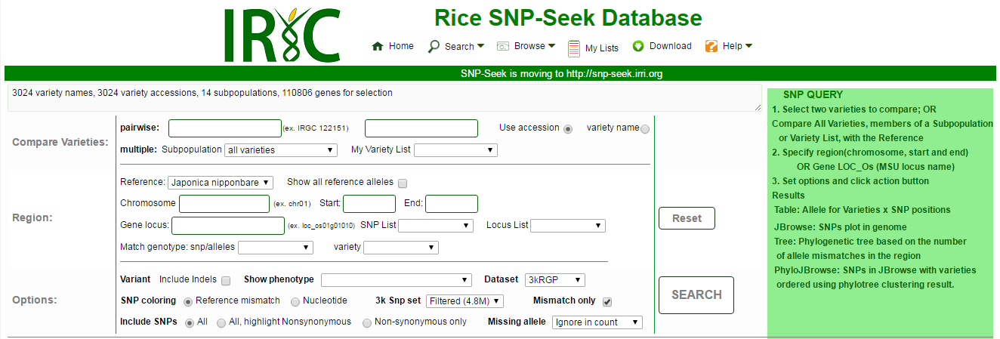
-
Supply the known information. Choose all varieties in the multiple: Subpopulation drop down menu in the Compare Varieties section. Supply the gene locus id in the Gene locus query box in the Region section.
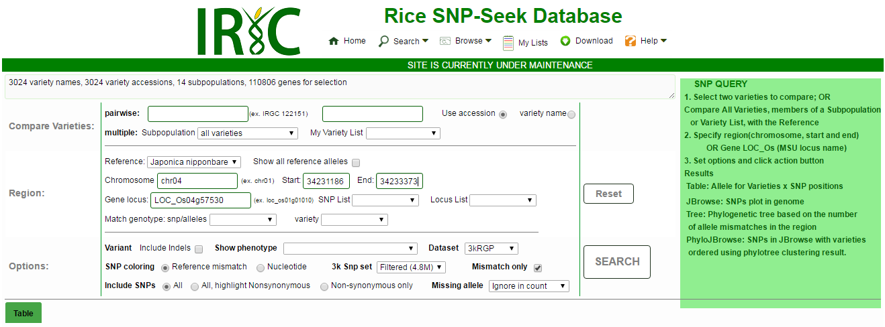
- The table matrix showing the accession with variation in the region will be returned. There are 78 varieties that shown variation in this region. The table matrix is downloaded in CSV to further examine the region.
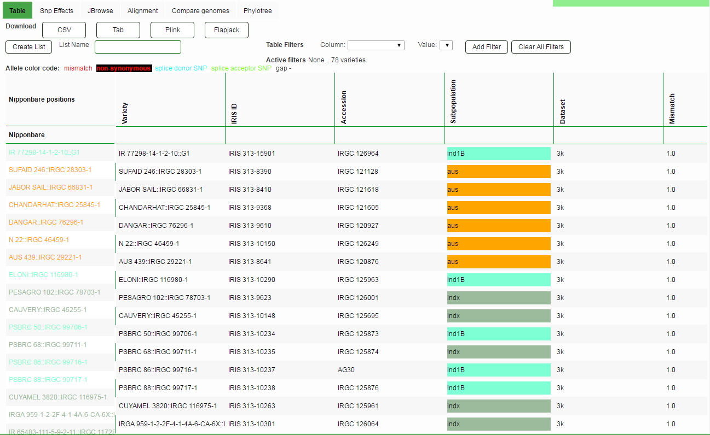
- Results can be downloaded as CSV format by clicking the CSV box in the Download section.
B. Finding varieties from the 3K panel that is similar to a particular variety.
Trait: 100-grain weight.
- Use Genotype to search across all varieties. Supply the information for region of interest. Choose 100-grain weight in the Show phenotype drop down menu. Untick Mismatch only box.
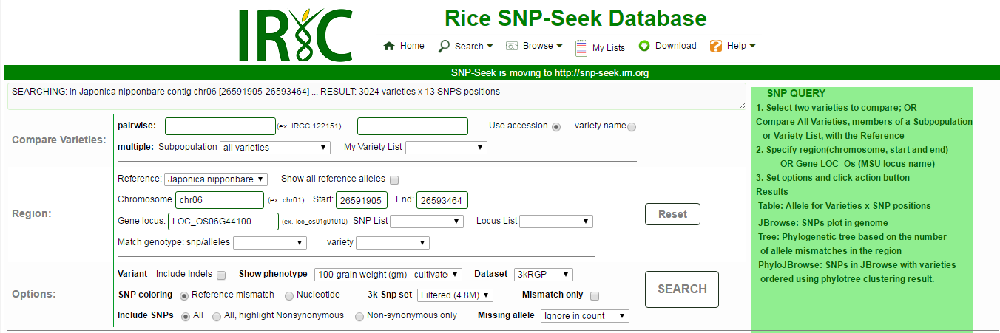
- The matrix table for 3024 accession will be returned with the 100-grain weight column.
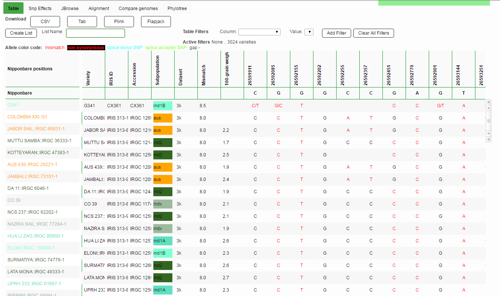
- Sort the accessions by 100-grain weight phenotype data by clicking on 100-grain weight column.
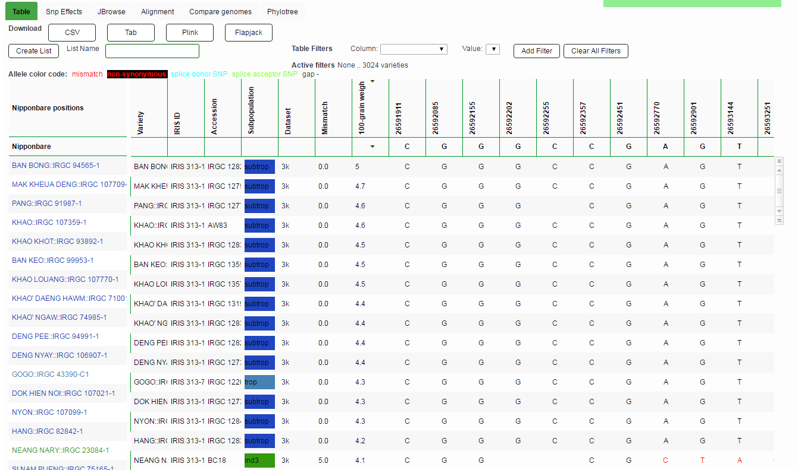
- Use the accession with the heaviest value as reference for the rest of the 3k panel by choosing the Accession in the variety drop down menu in the Region section.
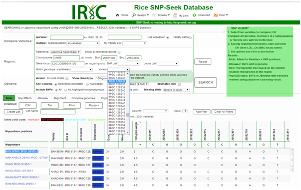
- The matrix table for 3024 accession will be returned.
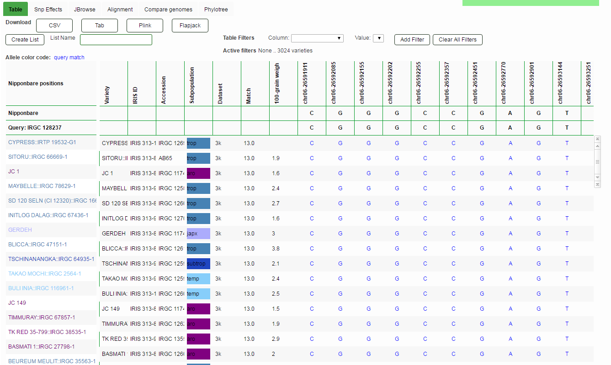
C. SNP discovery from a region not found in the Nipponbare reference genome
Region of interest: Pstol1 gene (chromosome 12, 15.46 mbps to 15.62 mbps) in the Kasalath genome.
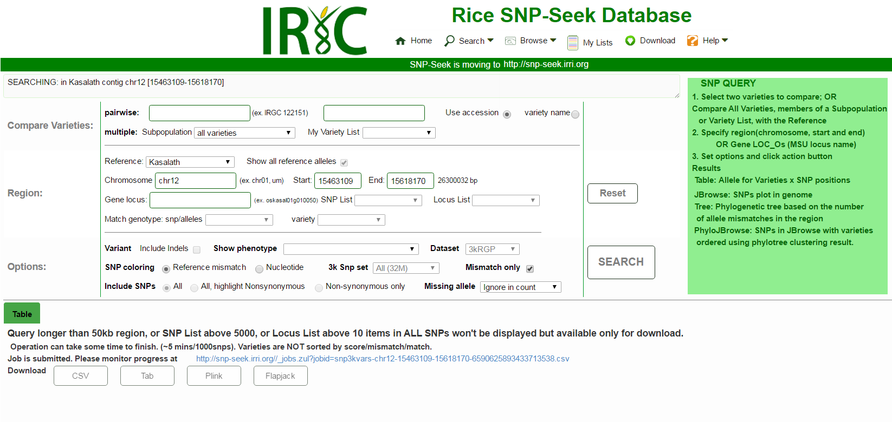
After inputting these information and reference genome setting, the query will return a link that enables downloading of a CSV formatted file SNP x 3k RG accession matrix. Inspecting this downloaded SNP matrix, there were 1,125 SNP positions discovered within this region, while no SNPs (blanks) were seen using Nipponbare genome, as expected. Without the Kasalath reference information, variant discovery would be impossible using the Nipponbare reference genome. These SNP positions can now be further examined and surrounding sequences extracted for Pstol1 marker assay design.
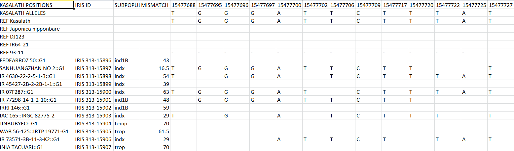
D. Given a region of interest (gene), download the fasta sequences of the region for all 3K genomes.
Region of interest: LOC_OS04G32850
1. Go to Download page.
- Go to Sequence tab.
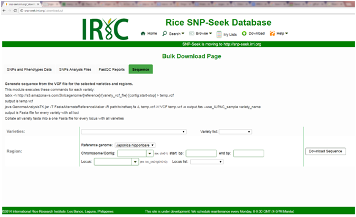
- Supply the Reference genome, Locus ID in the Locus drop down menu. By choosing the locus ID from the dropdown menu, the other information will be provided (chromosome/contig, start bp, end bp). Then choose all for Variety List dropdown menu, or the list of previously created Variety List. Then click the Download Sequence button to start downloading.
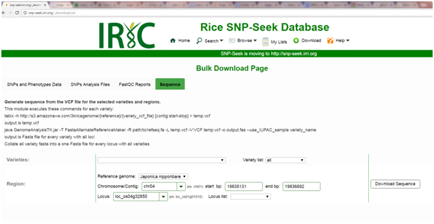
- The download will run in the background. The site will provide a url where the download progress can be monitored.
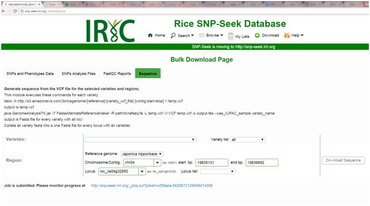
- The progress can be seen in another window. Refreshing the page will update the progress.
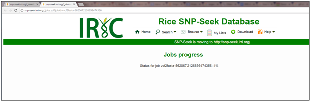
- Once the job is 100%, the sequence s can now be downloaded to the local work station.
Created with the Personal Edition of HelpNDoc: Single source CHM, PDF, DOC and HTML Help creation